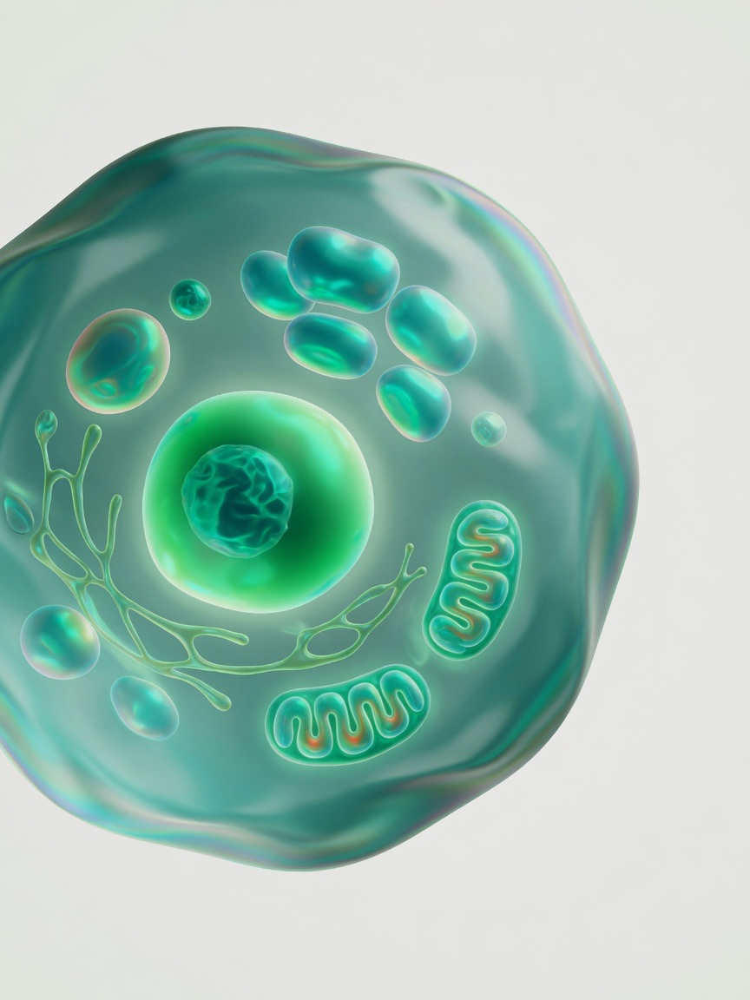

Biology has always been a science of structure. A protein's shape is its function; a regulatory element's position decides which genes switch on; a cell's molecular state determines whether it heals or harms. For most of the field's history, those structures were read out one painstaking experiment at a time. RMH Deeplink treats them instead as the outputs of learnable maps — from sequence to fold, from fold to function, from genotype to molecular state — and builds models accurate enough that biologists can stop measuring and start predicting. The aim is not a better lookup table. It is a working model of the molecular machinery of life that is faithful enough to design with.
Folding was the proof of concept, not the destination
The protein-folding problem — recovering a three-dimensional structure from a one-dimensional amino-acid sequence — was the canonical example of a question that is physically determined yet computationally forbidding. We did not solve it as a physics problem. We solved it as a learning problem, by inverting the evolutionary signal already written into the tree of life, and in doing so established a pattern we have applied to every question since.
Why a learning reframing wins
Anfinsen's hypothesis says the native fold sits at the minimum of a free-energy landscape encoded entirely in the sequence. In principle you could find it by simulation; in practice the landscape is astronomically rugged and the relevant timescales run from microseconds to seconds, far beyond what explicit-solvent dynamics can reach. The decisive insight is that evolution has already run the experiment billions of times. Across homologous proteins, residues that touch in the folded state mutate in correlated pairs — when one change would break a contact, a compensating change at the partner residue is selected for. The statistics of a multiple-sequence alignment therefore carry a noisy but rich map of spatial proximity, and the learning task is to invert that coupling signal into precise atomic geometry.
Our folding system represents each protein as a set of residue frames — rigid bodies carrying position and orientation — and refines them iteratively with an attention network that reasons jointly over sequence, couplings, and a growing geometric hypothesis. Three design choices matter far beyond folding:
- Coupled representations — information flows repeatedly between a 1D sequence view, a 2D pairwise view indexed by residue-residue pairs, and a 3D geometric view, so the network reasons toward a self-consistent structure the way an expert reconciles distance constraints with stereochemistry.
- Calibrated confidence — a per-residue, per-pair estimate of the model's own expected error, which turns a prediction from an assertion into evidence and lets a biologist trust the core, distrust the loops, and act accordingly.
- Equivariance to rotation and translation — the network predicts relative geometry, not coordinates in an arbitrary frame, baking in the correct physics and sharply improving data efficiency.
From single chains to complexes and motion
The fold of an isolated chain is only the first layer. Proteins act in assemblies — binding small molecules, nucleic acids, ions, and one another — and the interface is precisely where function and pharmacology live. Our second-generation systems predict the joint structure of complexes within a single generative framework that diffuses atomic coordinates conditioned on the full molecular context, whether the partner is a drug, a strand of DNA, or another protein. We are now extending these models from static snapshots toward distributions over conformations, training on ensembles from NMR, cryo-EM heterogeneity, and physics-based augmentation, so the model learns the accessible state space — the cryptic pockets, the allosteric transitions, the disorder-to-order coupling that single-structure prediction misses entirely.
A prediction without calibrated uncertainty is an assertion. A prediction with it is evidence — and evidence is what lets a model stand in for an experiment.
Design: inverting the generative model
If a model can map sequence to structure, the inverse problem — map a desired structure or function to a sequence that realises it — becomes a design engine of extraordinary reach. De novo protein design asks the model to diffuse a backbone that satisfies a functional specification — a binding site for a chosen target, a catalytic geometry, a desired symmetry — and then to find sequences that fold to that backbone with high confidence. We run design as a closed loop: generative backbone proposal, inverse-folding sequence design, in-silico filtering by the forward model's own confidence, and finally wet-lab synthesis and assay.
The significance is hard to overstate. Designed binders can replace antibodies that take years to raise; designed enzymes can catalyse reactions with no natural counterpart. Success is measured concretely — the fraction of designed sequences that express, fold, and bind their target. Moving that hit-rate from a few percent toward the majority is the difference between a curiosity and an industrial discipline. The same foundation feeds therapeutics: prediction reveals druggable pockets on targets that had no experimental structure, generative chemistry proposes molecules conditioned on a pocket while optimising for synthesisability, and property models triage metabolism and toxicity before anything is synthesised.

The genome is a control system, and most disease lives in it
Under two percent of the human genome codes for protein. The rest — long dismissed as junk — is a vast regulatory apparatus that decides when, where, and how strongly each gene is expressed, and most disease-associated variants from genome-wide studies fall inside it. Interpreting them is again a sequence-to-function problem: take hundreds of kilobases of DNA context and predict a profile of molecular activities — chromatin accessibility, transcription-factor binding, histone marks, RNA expression — at base-pair resolution across many cell types. Because the same locus is measured under hundreds of conditions, the model is forced to learn a shared, mechanistic representation of regulatory logic rather than memorising any single track, and that is what generalises to sequences it has never seen.
Once the map exists, a variant's effect follows from a simple operation: run the model on the reference and the variant, and compare. The difference is a quantitative, mechanistic hypothesis — which enhancer is disrupted, which gene dysregulated, in which tissue. That converts millions of catalogued variants into a ranked, interpretable set: the single causal variant in a Mendelian case, or the pathway on which thousands of small-effect common-disease variants converge. Analogous protein-language models score the pathogenicity of missense mutations zero-shot, from the evolutionary statistics of protein families, without any labels at all.
Higher still sits the cell. Single-cell transcriptomics, epigenomics, and spatial profiling now measure the state of tens of millions of individual cells, each a high-dimensional sample of a hidden underlying state. We treat these as the training corpus for foundation models of the cell — self-supervised models from which cell type, developmental trajectory, perturbation response, and disease status can be read out. The long-horizon ambition is a virtual cell: a model that predicts how a cell's molecular state shifts under a perturbation it has never seen — a drug, a gene knockout, a signalling input — letting biologists run experiments in silico before touching a pipette. Success is measured honestly, by held-out perturbation prediction: given effects seen in some cell types, does the model predict them in others, and does it generalise to genuinely novel perturbations? Every one of these systems ultimately answers to the wet lab, where expression, binding, and perturbation assays are the ground truth that keeps the models honest and turns prediction into discovery.
Open questions
- Dynamics over snapshots — can we move reliably from the single most probable structure to a calibrated distribution over conformations, capturing allostery and cryptic pockets rather than averaging them away?
- Design hit-rates — what closes the gap between a few percent and the majority of designs that express, fold, and bind, especially for catalysis and for binders against flat, featureless interfaces?
- Effective context — how do we hold base-pair resolution while reading regulatory grammar across the million-base-pair distances at which enhancers actually act?
- Out-of-distribution perturbations — does a virtual cell generalise to perturbation classes, cell types, and combinations entirely absent from training, or does it merely interpolate?
- Causation, not correlation — when a model flags a variant, a target, or a pathway, how do we validate that the relationship is causal before committing years of therapeutic effort to it?